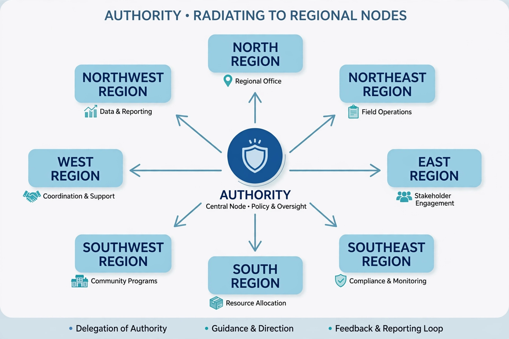

Decentralisation
From Wikipedia, the free encyclopedia
| Decentralisation | |
 | |
| Related concepts | Devolution, federalism, subsidiarity, delegation |
|---|---|
| Opposite | Centralisation |
Decentralisation (or decentralization) is the process by which the activities of an organization — particularly the planning and decision-making of a government — are distributed or delegated away from a central, authoritative location or group. It is the counterpart of centralisation, and ranges from modest administrative delegation to full political devolution and federalism.
Forms
Scholars commonly distinguish three forms. Deconcentration shifts administrative workload to field offices of central ministries. Delegation assigns functions to semi-autonomous bodies accountable to the centre. Devolution transfers authority, finance and responsibility to elected subnational governments. Fiscal decentralisation concerns which level of government taxes and spends; political decentralisation concerns the downward transfer of democratic decision-making.
Rationale and criticism
Advocates argue decentralisation brings decisions closer to citizens, improves responsiveness and local knowledge, allows policy experimentation, and disperses power. The principle of subsidiarity in Catholic social thought and European Union law holds that matters should be handled by the smallest competent authority. Critics point to risks of local elite capture, uneven capacity, regional inequality, and loss of economies of scale or national standards. Waves of decentralising reform since the 1980s — in France, Spain, Indonesia, and much of Latin America and Africa — have reshaped states, though results remain debated.
See also: International arbitration